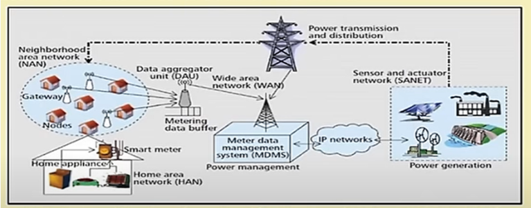

1. Which among the following is the most probable application scenario for a smart grid?
- a. Home automation
- b. Hospital networks
- c. Intelligent power plants
- d. Crop monitoring
Correct Answer: c. Intelligent power plants
2. With respect to a smart grid, which stakeholders are potentially benefitted?
- a. Energy Service providers
- b. Energy consumers/customers
- c. Both energy service provides and consumers
- d. Neither energy service providers nor consumers
Correct Answer: c. Both energy service provides and consumers
3. It is not possible to perform load forecasting using a smart grid.
Correct Answer: b. False
4. With respect to the following Smart Grid architecture, which among the following is the most probable utility of the IP network?

- a. IP network has no utility
- b. IP network is used to connect smart grid components globally for seamless data transfer
- c. IP network is used for multimedia video streaming only
- d. IP network is used to induce more congestion
Correct Answer: b. IP network is used to connect smart grid components globally for seamless data transfer
5. Smart Home is an isolated concept and is not integrable with smart grid?
Correct Answer: a. False
6. Which of the following is a cloud application of smart grid?
- a. Information management
- b. Energy management
- c. Security
- d. All of these
Correct Answer: d. All of these
7. Which of the following is not a vulnerability of Smart Grid?
- a. Integrity
- b. Physical threats
- c. Dynamic system attacks
- d. None of these
Correct Answer: d. None of these
8. IIoT corresponds to which industrial revolution?
- a. 1st
- b. 2nd
- c. 3rd
- d. 4th
Correct Answer: d. 4th
9. IIoT is inherently data intensive.
Correct Answer: a. Yes
10. Which among the following is one of the requirements and utility of IIoT?
- a. Power plant interruption
- b. Power plant virtualization
- c. Power plant decentralization
- d. Power plant denotification
Correct Answer: b. Power plant virtualization
11. Smart Grid follows which type of flow of energy?
- a. Bidirectional
- b. Unidirectional
- c. Both a and b
- d. Neither a nor b
Correct Answer: a. Bidirectional
12. What is the Flow of data?
- a. Acquisition > Generation > Storage > Analysis
- b. Generation > Storage > Analysis > Acquisition
- c. Generation > Acquisition > Storage > Analysis
- d. None of these
Correct Answer: c. Generation > Acquisition > Storage > Analysis
13. Intelligent transport system is least likely to render which of the following connectivity?
- a. Vehicle-to-vehicle connectivity
- b. Vehicle-to-sensor connectivity
- c. Vehicle-to-road infrastructure
- d. Vehicle-to-home connectivity
Correct Answer: d. Vehicle-to-home connectivity
14. Approximately around ________ of the total data available currently in the world is unstructured.
- a. 20 %
- b. 40 %
- c. 60 %
- d. 80 %
Correct Answer: d. 80 %
15. SQL manages ________________ data.
- a. Unstructured
- b. Corrupt
- c. Structured
- d. Non-organized
Correct Answer: c. Structured